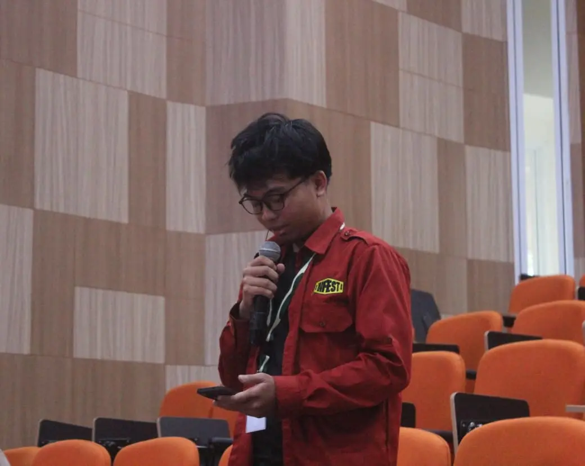

Saya adalah Mahasiswa Sistem Informasi di Universitas Tanjungpura. Saat ini saya sedang mendalami pemrograman web dasar yang mencakup penyusunan struktur HTML, desain antarmuka CSS, serta interaktivitas menggunakan JavaScript.
Kunjungi GitHubMenyusun kerangka dokumen web yang rapi, semantik, pembuatan form, serta pengelolaan hyperlink dan gambar.
Mengatur tampilan visual dengan CSS Box Model, variabel warna (:root), Flexbox, serta CSS Grid yang responsif.
Membuat halaman web lebih hidup dengan manipulasi elemen DOM, efek ketik otomatis, dan validasi form.